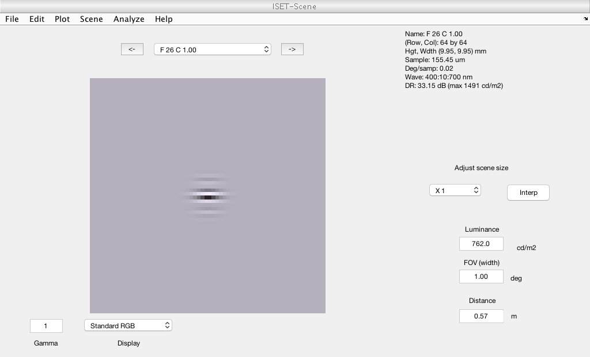

Contents
- s_mainAnalysis.m
- 0. SET GENERAL PARAMETERS
- 1. SET EXPERIMENT PARAMETERS
- 2. OPTICS: Create a diffraction limited optical wavefront
- 3. PHOTORECEPTOR: Create Cone Mosaic
- 4. SCENE/STIMULI: Create OI Sequence
- 5. ISOMERIZATION RATE: Compute absorptions
- 6. CALCULATE CONTRAST SENSITIVITY: First calculate d-prime from two stimuli
- For future study, create a hexagonal cone mosaic (computational expensive)
s_mainAnalysis.m
% Script to create an ideal observer model based on the article by Banks et % al. (1991). % Full citation: % Peripheral spatial vision: limits imposed by optics, photoreceptors, and % receptor pooling. (1991) Banks, M.S., Sekuler, S.B., & Anderson, S.J. % Journal of the Optical Society of America A (JOSAA). Vol 8, No 11, % 1775-1787. % DESCRIPTION: % This main analysis can recompute Figure 5, the ideal observer model, as % follows: % 0. Set up general parameters: % - Check if you want to print out text/figures, save results, select % observer (for now, only ideal, hopefully later we can also compute % human observer). % 1. Set up experimental parameters: % - Load stimulus parameters, like size, spatial frequency, etc. for % gabor stimulus (alpha) and a blank stimulus (beta) % 2. Create optics % 3. Create photoreceptor mosaic % 4. Create stimulus presentation with previous loaded parameters % 5. Calculate isomerization rate per cone, per stimulus % 6. Compute d-prime from photon absorptions for stimulus alpha and beta % To visualize results, as in figure 5, use s_visualizeResults.m % DEPENDENCIES: % This script requires ISETBio % AUTHOR: % Eline Kupers, 2018, NYU
0. SET GENERAL PARAMETERS
verbose = true; % Print out text/figures? saveResults = true; % Same d-prime results deg2m = 0.3 * 0.001; % 3 deg per mm, .001 mm per meter whichObserver = 'ideal'; % choose from 'ideal' or 'human' segment = 'outer'; % choose from 'inner' or 'outer' cone segment
1. SET EXPERIMENT PARAMETERS
% Load experiment parameters expParams = loadExpParamsBanks1991; % Set a dummy contrast level to create stimulus test params thisContrast = expParams.contrastLevels(1); % Load scene parameters sparams = getSceneParams;
2. OPTICS: Create a diffraction limited optical wavefront
% Ideal observer model takes into account: % Pupil size, ocular media transmittance and photoreceptor % properties of the human eye at 0, 2, 5, 10, 20, 40 deg % eccentricity (horizontal VF, nasal retina). % OTF is modeled as optics diffraction limited and identical at % all eccentricities % Human subjects are one emmetrope and one 0.75-D myope, using % 1.5 mm artificial pupil oi = getOptics(whichObserver, verbose); for thisEccen = 0; %expParams.eccen(:,1)' % Choose from 0, 2, 5, 10, 20, 40 or all using: expParams.eccen(:,1)'
clear alphaAbsorptions betaAbsorptions
3. PHOTORECEPTOR: Create Cone Mosaic
% Curcio PR data was used to model inner cone segment % diameters and cone density. % Data from Polyak, Cheng-Yu & van Sluijters were used to % calculate outer segment diameter in paper. Both inner and % outer cone segment sizes were based on figure 1 in paper. cMosaic = getConeMosaic(expParams, thisEccen, deg2m, sparams, whichObserver, segment, verbose);
4. SCENE/STIMULI: Create OI Sequence
% Create an ISETBIO OI Sequence: - The stimuli are horizontal % Gabor patches, presented foveally or along the horizontal % meridian 2AFC detection task: One Gabor presented abruptly % for 100 ms intervals and one blank screen. Task was to say % which interval there was a Gabor - Average luminance = 762 % cd/m2 - Retinal illuminance was 1348 Td. - Contrast levels % were varied between 1-100% for thisSpatFreq = expParams.sf(1,:) % Or choose from [0.25, 0.4, 0.65, 1, 1.6, 2.6, 4, 6.5, 8, 10, 16, 26] % Find the indices of corresponding target size idx = [find(thisEccen == expParams.eccen(:,1)), find(thisSpatFreq == expParams.sf(1,:))]; % Get the Gaussian window of the stimulus target thisTargetSize = expParams.sd(idx(1),idx(2)); if ~isnan(thisTargetSize) if verbose; fprintf('\nSimulating Banks 1991: %s observer, %s cone segment, at %d deg eccentricity, with %2.2f cpd spatial frequency\n', whichObserver, segment, thisEccen, thisSpatFreq); end % Load stimulus params [tparams, tseries] = getStimulusParams(thisContrast, thisTargetSize, thisSpatFreq); % The two harmonics are 'blended', which means at each moment % in time we have a weighted sum of the two where the weights % sum to 1. [ois(1), scene1] = oisCreate('harmonic','blend',tseries, ... 'testParameters',tparams{1},... 'sceneParameters',sparams, ... 'oi', oi); % Loop over stimulus contrast levels if verbose; fprintf('Simulating Banks 1991: Compute cone photon absorptions'); end for c = expParams.contrastLevels; if verbose; fprintf('.'); end
% Recompute stim for particular contrast tparams{2}(2).contrast = c; [ois(2), scene2] = oisCreate('harmonic','blend',tseries, ... 'testParameters',tparams{2},... 'sceneParameters',sparams, ... 'oi', oi);
5. ISOMERIZATION RATE: Compute absorptions
Result is a 6D array (contrast x SF x trials x cols x rows x time points)
alphaAbsorptions(c==expParams.contrastLevels, thisSpatFreq==expParams.sf(1,:),:,:,:,:) = cMosaic.compute(ois(1), 'currentFlag', false); betaAbsorptions(c==expParams.contrastLevels, thisSpatFreq==expParams.sf(1,:),:,:,:,:) = cMosaic.compute(ois(2), 'currentFlag', false);
end if verbose; fprintf(' Done!\n'); end else % If no stimulus defined in table 1, add NaNs to array if verbose fprintf('\nSimulating Banks 1991: No stimulus at %d deg eccentricity, %2.2f cpd spatial frequency\n', thisEccen, thisSpatFreq) fprintf('Simulating Banks 1991: Replace absorptions with NaNs\n'); end alphaAbsorptions(1:length(expParams.contrastLevels), thisSpatFreq==expParams.sf(1,:), expParams.nTrials, 1:cMosaic.rows, 1:cMosaic.cols, 1:(expParams.duration*100)+1) = ... NaN(length(expParams.contrastLevels),1,expParams.nTrials,cMosaic.rows,cMosaic.cols, (expParams.duration*100)+1); betaAbsorptions(1:length(expParams.contrastLevels), thisSpatFreq==expParams.sf(1,:), expParams.nTrials, 1:cMosaic.rows, 1:cMosaic.cols, 1:(expParams.duration*100)+1) = ... NaN(length(expParams.contrastLevels),1,expParams.nTrials,cMosaic.rows,cMosaic.cols, (expParams.duration*100)+1); end end % Visualize scene and cone mosaic absorptions if verbose % Visualize the OIS ois(2).visualize('movieilluminance'); % Visualize the scene ieAddObject(scene2{1}); ieAddObject(scene2{2}); sceneWindow; % Now, show the time series of weighting the Gabor and blank stimulus ois(2).visualize('weights'); % Show cone mosaic and absorption movie cMosaic.window; end % Do some checks: % Check mean luminance, geisler's computation of isomerization: [luminance, meanLuminance] = sceneCalculateLuminance(scene2{2}); % Or alternatively?: lum = ois(2).oiModulated.data.photons; coneApertureDiameterMinutes = 2*sqrt((((sqrt(cMosaic.pigment.pdWidth*1e6*cMosaic.pigment.pdHeight*1e6)/300)*60)^2)/pi); isomerizationsGeisler = IsomerizationsFromLuminanceGeisler(meanLuminance,0.1,1.5, 'coneApertureDiameterMinutes', coneApertureDiameterMinutes); % Check Isetbio computation of isomerization for one trial, one contrast, % one eccentricity, one spatial frequency thisTrialAbsorptions = cMosaic.absorptions(:); coneLocations = cMosaic.pattern(:); sumIsomerizations = zeros(3,1); nSummed = zeros(3,1); for jj = 1:length(coneLocations) coneType = coneLocations(jj)-1; sumIsomerizations(coneType) = sumIsomerizations(coneType)+thisTrialAbsorptions(jj); nSummed(coneType) = nSummed(coneType) + 1; end isomerizationsIsetbio = sumIsomerizations ./ nSummed; if verbose fprintf('ISETBIO''s estimate of mean Gabor scene luminance: %3.2f cd/m2\n', meanLuminance); fprintf('ISETBIO''s absorption count : %3.2f photons\n', isomerizationsIsetbio); fprintf('Geislers''s absorption count : %3.2f photons\n', isomerizationsGeisler); end
Simulating Banks 1991: No stimulus at 0 deg eccentricity, 0.25 cpd spatial frequency Simulating Banks 1991: Replace absorptions with NaNs Simulating Banks 1991: ideal observer, outer cone segment, at 0 deg eccentricity, with 0.40 cpd spatial frequency Simulating Banks 1991: Compute cone photon absorptions............................ Done! Simulating Banks 1991: ideal observer, outer cone segment, at 0 deg eccentricity, with 0.65 cpd spatial frequency Simulating Banks 1991: Compute cone photon absorptions............................ Done! Simulating Banks 1991: ideal observer, outer cone segment, at 0 deg eccentricity, with 1.00 cpd spatial frequency Simulating Banks 1991: Compute cone photon absorptions............................ Done! Simulating Banks 1991: ideal observer, outer cone segment, at 0 deg eccentricity, with 1.60 cpd spatial frequency Simulating Banks 1991: Compute cone photon absorptions............................ Done! Simulating Banks 1991: ideal observer, outer cone segment, at 0 deg eccentricity, with 2.60 cpd spatial frequency Simulating Banks 1991: Compute cone photon absorptions............................ Done! Simulating Banks 1991: ideal observer, outer cone segment, at 0 deg eccentricity, with 4.00 cpd spatial frequency Simulating Banks 1991: Compute cone photon absorptions............................ Done! Simulating Banks 1991: ideal observer, outer cone segment, at 0 deg eccentricity, with 6.50 cpd spatial frequency Simulating Banks 1991: Compute cone photon absorptions............................ Done! Simulating Banks 1991: No stimulus at 0 deg eccentricity, 8.00 cpd spatial frequency Simulating Banks 1991: Replace absorptions with NaNs Simulating Banks 1991: ideal observer, outer cone segment, at 0 deg eccentricity, with 10.00 cpd spatial frequency Simulating Banks 1991: Compute cone photon absorptions............................ Done! Simulating Banks 1991: ideal observer, outer cone segment, at 0 deg eccentricity, with 16.00 cpd spatial frequency Simulating Banks 1991: Compute cone photon absorptions............................ Done! Simulating Banks 1991: ideal observer, outer cone segment, at 0 deg eccentricity, with 26.00 cpd spatial frequency Simulating Banks 1991: Compute cone photon absorptions............................ Done! ISETBIO's estimate of mean Gabor scene luminance: 762.00 cd/m2 ISETBIO's absorption count : 30.04 photons ISETBIO's absorption count : 22.54 photons ISETBIO's absorption count : 3.25 photons Geislers's absorption count : 636.93 photons
6. CALCULATE CONTRAST SENSITIVITY: First calculate d-prime from two stimuli
% Set function to calculate d-prime (Based on Log likelihood) dPrime = dPrimeFunction; thisdPrime = []; for c = 1:length(expParams.contrastLevels) for sf=1:size(alphaAbsorptions,2) this_alpha = squeeze(mean(alphaAbsorptions(c,sf, 1,:,:,:),6)); this_beta = squeeze(mean(betaAbsorptions(c,sf, 1,:,:,:),6)); thisdPrime(c, sf) = dPrime(this_alpha,this_beta); end end % Save result, if requested. These results will be loaded by % s_visualizeResults.m if saveResults if verbose; fprintf('Simulating Banks 1991: Save d-prime\n'); end saveDir = fullfile(banksRootPath, 'results'); if ~exist(saveDir, 'dir'); mkdir(saveDir); end save(fullfile(saveDir, sprintf('dPrime_%s_%s_eccen%d.mat', whichObserver, segment, thisEccen)), 'thisdPrime'); end
Simulating Banks 1991: Save d-prime
end return
Warning: Selected radius is very small. Increasing to 25 Complex otf values
For future study, create a hexagonal cone mosaic (computational expensive)
% Set Hexagonal Mosaic import/export options saveMosaic = false; % whether to save the mosaic loadMosaic = false; % whether to load a previously saved mosaic saveMosaicPDF = false; % whether to save a PDF of the mosaic quality.tolerance1 = 0.5; % larger than default tolerances to speed-up computation. For production work, either do not set, or set to equal or lower than 0.01 quality.tolerance2 = 0.05; % larger than default tolerances to speed-up computation, For production work, either do not set, or set to equal or lower than 0.001 quality.marginF = []; % How much larger lattice to generate so as to minimize artifacts in cone spacing near the edges. If empty, a dynamic adjustment of margin is done for mosaics < 1.0 degs HexMosaicParams = struct(... 'name', 'the hex mosaic', ... 'resamplingFactor', 9, ... % Sets underlying pixel spacing; controls the rectangular sampling of the hex mosaic grid 'eccBasedConeDensity', true, ... % Whether to have an eccentricity based, spatially - varying density 'sConeMinDistanceFactor', 3.0, ... % Min distance between neighboring S-cones = f * local cone separation - used to make the S-cone lattice semi-regular 'sConeFreeRadiusMicrons', 0.15*300, ... % Radius of S-cone free retina, in microns (here set to 0.15 deg). 'spatialDensity', [0 6/10 3/10 1/10]... % With a LMS density of of 6:3:1 ); % Set FOVs examined HexMosaicParams.fovDegs = sparams.fov; % mosaic FOV % Create the hexagonal mosaic theHexMosaic = coneMosaicHex(HexMosaicParams.resamplingFactor, ... 'name', HexMosaicParams.name, ... 'fovDegs', HexMosaicParams.fovDegs, ... 'eccBasedConeDensity', HexMosaicParams.eccBasedConeDensity, ... 'sConeMinDistanceFactor', HexMosaicParams.sConeMinDistanceFactor, ... 'sConeFreeRadiusMicrons', HexMosaicParams.sConeFreeRadiusMicrons, ... 'spatialDensity', HexMosaicParams.spatialDensity, ... 'latticeAdjustmentPositionalToleranceF', quality.tolerance1, ... 'latticeAdjustmentDelaunayToleranceF', quality.tolerance2, ... 'marginF', quality.marginF ... ); theHexMosaic.displayInfo(); % Visualize the mosaic, showing both the light collecting area (inner % segment) and the geometric area visualizedAperture = 'lightCollectingArea'; % choose between 'both', 'lightCollectingArea', 'geometricArea' theHexMosaic.visualizeGrid(... 'visualizedConeAperture', visualizedAperture, ... 'apertureShape', 'disks', ... 'panelPosition', [1 1], 'generateNewFigure', true); % Compute the cone isomerizations / absorptions isomerizationsHex = theHexMosaic.compute(ois,'currentFlag',false); % Visualize theHexMosaic.window;